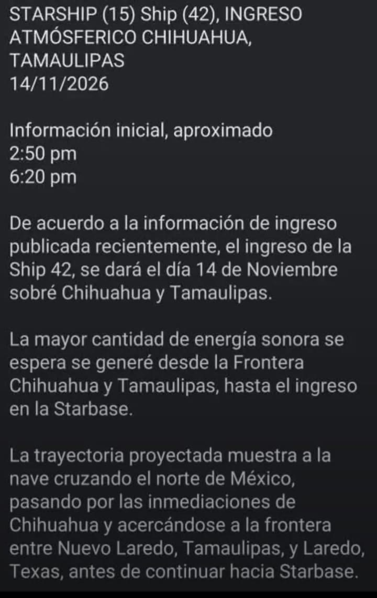
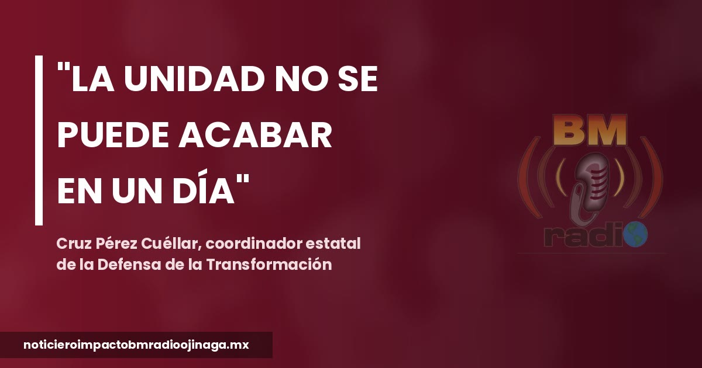
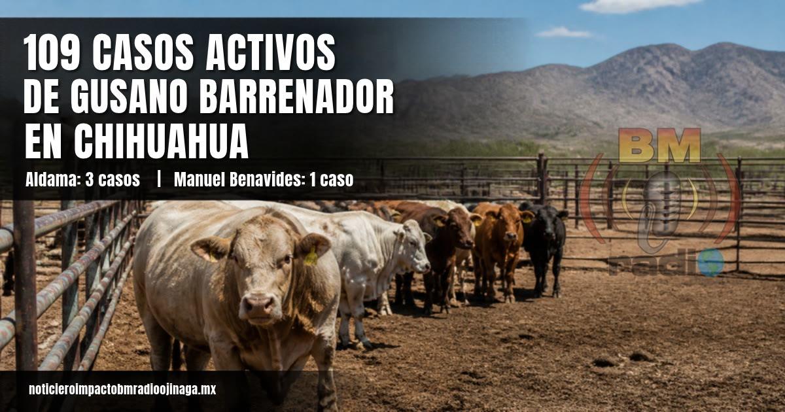
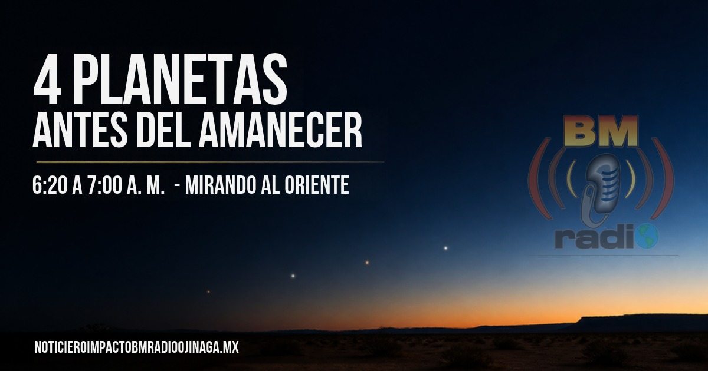
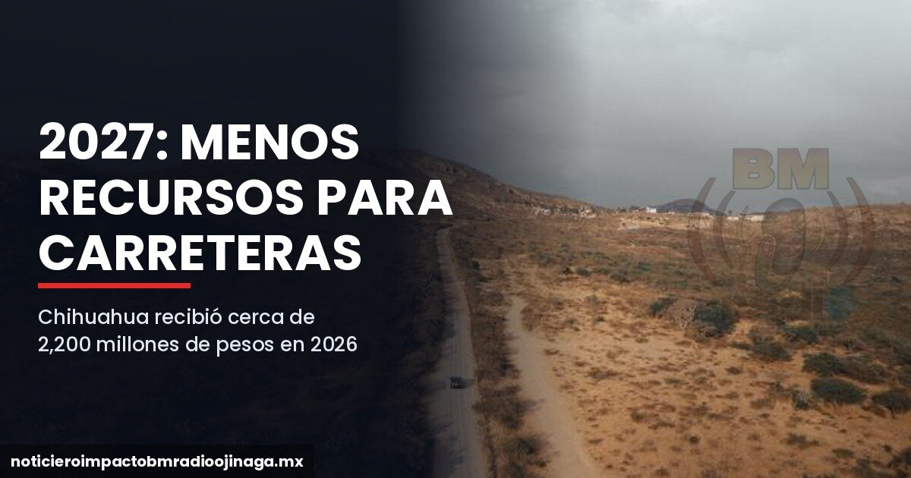

Estatal
La presidenta nacional de Morena, Ariadna Montiel, confirmó en Ciudad Juárez que ya presentó una demanda por daño moral contra la gobernadora María Eugenia Campos ante el Tribunal de Justicia de la Ciudad de México. Dijo que esperará la respuesta de las autoridades y que no hará más comentarios hasta que haya resolución. Sobre el caso del exfiscal César Jáuregui, señaló que solo las investigaciones de la FGR deben aclarar los hechos.
Estatal
El Congreso del Estado realizó este sábado una sesión solemne en Cuchillo Parado, municipio de Coyame del Sotol, con representantes de los tres poderes y familias de la comunidad. Se recordó el levantamiento del general Toribio Ortega del 14 de noviembre de 1910, que dio a la localidad el título de cuna de la Revolución, y al final se montó una guardia de honor frente a su busto.
Estatal
En la Reunión Nacional de Organización realizada este sábado en Ciudad Juárez, Cruz Pérez Cuéllar, coordinador estatal de la Defensa de la Transformación, llamó a la unidad y a defender los programas sociales. Señaló que la oposición dice apoyar esos programas pero vota en contra, y acusó al Gobierno del Estado de abandonar a los municipios. Ariadna Montiel, presidenta nacional de Morena, lo respaldó y afirmó que en 2027 “uno de nosotros va a ganar este estado”.
Local
Ojinaga, Chih.- El fuerte estruendo que se escuchó esta tarde, poco después de las 3:00 pm, habría sido causado por el regreso de la nave Starship de la empresa SpaceX. Tras casi un día en órbita, la nave volvió a la Tierra cruzando el norte de México rumbo a su base en el sur de Texas, donde fue recuperada poco después. Cuando una nave de este tamaño entra a la atmósfera a gran velocidad, produce un estampido sónico que puede escucharse a cientos de kilómetros de distancia, aunque no haya ninguna explosión en tierra. En Ojinaga se escuchó con fuerza en distintos puntos de la ciudad, como la colonia La Pista, Héroes Nacionales, la Zapata, Las Ferias, Oasis, la 2 de Octubre y la salida a Presidio. Algunos vecinos dijeron que les vibraron las ventanas y que sintieron una "onda expansiva". Nuestros seguidores también reportaron haberlo escuchado en Coyame, Mulato, Aldama, El Mezquite, Rancho Blanco, Cañada Ancha, Ejido Chorreras, la ciudad de Chihuahua, Meoqui, Delicias e incluso en Terlingua, Texas. Según medios nacionales, en la capital del estado vecinos de colonias del norte reportaron que se cimbraron sus ventanas. Hasta el momento las autoridades no han reportado daños ni personas lesionadas.

Frontera
Ojinaga, Chihuahua, 14 de noviembre de 2026. El paso de la nave Starship Ship 42, de la empresa SpaceX, durante su reingreso atmosférico, se hizo evidente en la región fronteriza de Ojinaga y Presidio, Texas, donde habitantes reportaron fuertes estruendos y vibraciones que hicieron temblar algunas viviendas. De acuerdo con los reportes ciudadanos, el sonido fue particularmente intenso y estuvo acompañado de movimientos perceptibles en las casas, lo que llamó la atención y generó inquietud entre residentes de ambas comunidades fronterizas. La trayectoria proyectada de la nave contemplaba cruzar el norte de México, con desplazamiento por las inmediaciones de Chihuahua y Tamaulipas, para posteriormente dirigirse hacia Starbase, Texas. El fenómeno acústico estaría relacionado con el paso de la nave a gran velocidad y los efectos físicos que puede generar durante su reingreso a la atmósfera. Lo ocurrido en Ojinaga y Presidio evidencia cómo las operaciones espaciales de SpaceX pueden tener efectos perceptibles incluso a cientos de kilómetros de sus instalaciones en Texas. Habitantes de la región vivieron así un fenómeno poco común, que convirtió una operación espacial en un acontecimiento perceptible a ambos lados de la frontera.

Estatal
Durante la visita de la presidenta nacional de Morena, Ariadna Montiel, a Ciudad Juárez, Cruz Pérez Cuéllar, coordinador estatal de la Defensa de la Transformación, informó que ya mantiene comunicación con la senadora Andrea Chávez. Dijo que la invitó al encuentro de este sábado, pero que ella tenía compromisos previos. Agregó que construir acuerdos requiere tiempo, diálogo y disposición. Por su parte, Montiel dijo que se trabaja en una alianza con tres partidos rumbo a 2027.

Estatal
Chihuahua tiene 109 casos activos de gusano barrenador del ganado en al menos 32 municipios y ocupa el cuarto lugar nacional, según el reporte más reciente del Senasica. En la región hay 3 casos activos en Aldama y 1 en Manuel Benavides. Se recomienda a los productores revisar a diario las heridas de su ganado y reportar cualquier caso sospechoso a las autoridades sanitarias.
Estatal
En este video, la presidenta nacional de Morena, Ariadna Montiel, habla ante los asistentes a la Reunión Nacional de Organización de Morena en Ciudad Juárez. Mira el video completo en Facebook.
Estatal
La presidenta nacional de Morena, Ariadna Montiel Reyes, y la secretaria general del partido, Carolina Rangel, acompañaron a Cruz Pérez Cuéllar durante un encuentro con representantes de los medios de comunicación en Chihuahua, donde destacaron la importancia de fortalecer la unidad y organización del movimiento en la entidad. Durante el encuentro, se expresó confianza en el crecimiento de Morena y en el respaldo ciudadano al proyecto de la Cuarta Transformación, con el objetivo de que llegue a todo el estado. Asimismo, se lanzó un mensaje político hacia el PAN, al señalar que existe nerviosismo ante el avance y fortalecimiento de Morena en Chihuahua. Los participantes reiteraron que la unidad, la organización y el trabajo territorial serán fundamentales para consolidar el movimiento y enfrentar los próximos retos políticos en el estado.
Policiaca
Miguel Ángel Félix Gallardo, de 80 años, conocido como el "Jefe de Jefes" y fundador del Cártel de Guadalajara, fue trasladado de emergencia el viernes 13 de noviembre del penal de Puente Grande a un hospital privado de Guadalajara, luego de presentar baja oxigenación, alteración del estado de conciencia y desorientación. De acuerdo con reportes periodísticos, el traslado se realizó en ambulancia con un fuerte operativo de seguridad, con apoyo de un helicóptero y elementos de la Policía Estatal de Jalisco y de la Policía Penitenciaria. Félix Gallardo lleva más de tres décadas en prisión, entre otros delitos por el asesinato del agente de la DEA Enrique "Kiki" Camarena. Hasta el momento no se ha informado cuándo podría salir del hospital.

Local
Mercurio, Venus, Marte y Júpiter podrán observarse a simple vista en las madrugadas de estos días, hasta el 22 de noviembre. En Ojinaga, el mejor momento es de 6:20 a 7:00 de la mañana, mirando hacia el oriente, antes de que salga el sol (alrededor de las 7:22). Venus será el más brillante y Marte se distingue por su color rojizo. Mercurio aparece muy bajo en el horizonte y es el más difícil de encontrar; se verá mejor del 20 al 22 de noviembre. Se recomienda buscar un lugar alejado de las luces de la ciudad y con el horizonte despejado. Unos binoculares ayudan a ver Mercurio.
Estatal
México ocupa el octavo lugar mundial en número de personas con diabetes, según la Federación Internacional de Diabetes. En Chihuahua, la Secretaría de Salud del Estado reporta 14,555 casos nuevos en lo que va de 2026 (8,277 mujeres y 6,278 hombres), cifra casi igual a la de todo 2025. La dependencia recuerda que la diabetes puede no dar síntomas al inicio. Recomienda revisar la glucosa con regularidad, sobre todo a quienes tienen familiares con diabetes, sobrepeso o presión alta. También recomienda comer balanceado, dormir bien y hacer unos 40 minutos de ejercicio, cuatro días a la semana. Acuda a su unidad de salud para una detección oportuna.
Policiaca
El cantante de corridos tumbados Gabito Ballesteros fue detenido la madrugada de este sábado en Santiago de Querétaro, luego de que se suspendiera su presentación en la Feria Internacional Ganadera. Según el Registro Nacional de Detenciones, la Policía Estatal lo detuvo a las 4:00 de la mañana y lo puso a disposición del Ministerio Público, en traslado a la Fiscalía General de la República. El Comité Organizador de la feria informó que el artista interpretó canciones que no estaban autorizadas, entre ellas "AMG", por presunta apología del delito. Ballesteros transmitió en vivo desde su vehículo, cuestionó a los policías y preguntó cuál era su delito. Hasta el momento, las autoridades no han informado de qué se le acusa.
Estatal
Por el aniversario de la Revolución Mexicana, los alumnos de educación básica tendrán dos días de descanso esta semana y la próxima. El lunes 16 de noviembre es el día oficial de descanso, y el viernes 20 se suspenden clases para que las escuelas participen en los desfiles conmemorativos, informaron los Servicios Educativos del Estado de Chihuahua (Seech) para las escuelas federalizadas de la zona norte. Se recomienda a madres y padres de familia confirmar con la escuela de sus hijos.
Estatal
La Junta Central de Agua y Saneamiento del Estado arranca este domingo 15 de noviembre el programa "Ahorra o Nunca". Ofrece hasta 100% de descuento en multas y recargos y hasta 90% en adeudos de agua, drenaje y saneamiento. Aplica a usuarios domésticos, mixtos y comerciales con contrato activo y más de seis meses de atraso que no hayan recibido otro descuento en los últimos 18 meses. Basta llevar el número de contrato y una identificación oficial vigente. Cada junta define sus porcentajes, por lo que en Ojinaga hay que consultarlos en las oficinas de la JMAS. El programa estará vigente hasta el 31 de marzo de 2027.
Nacional
La nave Starship de SpaceX, lanzada ayer desde Texas, podría cruzar el espacio aéreo mexicano a gran altitud cuando regrese este sábado. Pasaría alrededor de las 3:00 de la tarde y el cruce duraría unos 15 minutos. Así lo informaron SENEAM y la Agencia Federal de Aviación Civil, que aclararon que el cruce todavía no está confirmado. Podría haber ajustes temporales en rutas y horarios de vuelos; las aerolíneas avisarán directamente a sus pasajeros si hay cambios.

Estatal
El secretario de Comunicaciones y Obras Públicas del Estado, Jorge Chánez Peña, informó que en 2027 se espera una reducción de los recursos federales para conservar las carreteras de Chihuahua. Este año la Federación destinó alrededor de 2,200 millones de pesos a ese rubro. El monto exacto del recorte todavía no se conoce. Esto podría afectar el mantenimiento de caminos rurales y de los tramos de la región.
Estatal
Cruz Pérez Cuéllar, coordinador estatal de la Defensa de la Cuarta Transformación, encabezó asambleas en Riberas de Sacramento, al norte de la capital, y en Punta Oriente, al sur. Ahí llamó a la ciudadanía a organizarse y a defender los programas sociales. Según Pérez Cuéllar, Chihuahua capital no debe quedar al margen, porque "la ciudad son todas sus colonias".
Estatal
Un nuevo frente frío entra este sábado al noroeste del país y podría dejar chubascos en algunas zonas del estado y temperaturas de -5 a 0 °C en las partes altas de la sierra de Chihuahua durante las madrugadas del domingo y del lunes. Si viaja a la sierra, salga abrigado. En casa, no duerma con calentones encendidos y ventile las habitaciones.
Nacional
La Secretaría de Hacienda retiró por completo el estímulo fiscal a la gasolina Premium y dejó casi sin apoyo a la Magna para la semana del 14 al 20 de noviembre. El IEPS de la Magna sube a 6.68 pesos por litro, 1.72 pesos más que la semana pasada, y el de la Premium llega a 5.66 pesos, su nivel máximo del año. El diésel sigue exento por décima semana consecutiva. En la franja fronteriza el estímulo se calcula por separado, así que en Ojinaga el ajuste podría ser distinto.